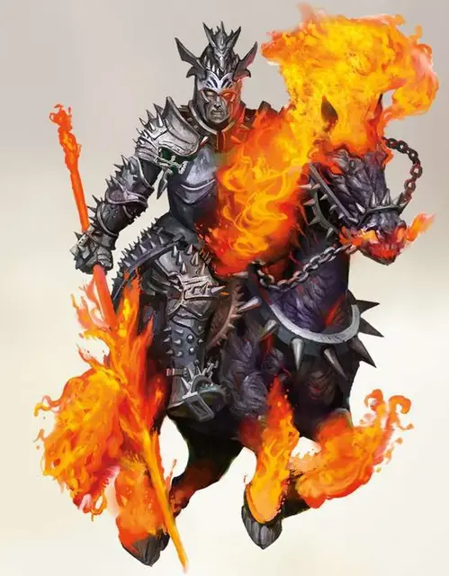

Нарзугон
Narzugon
Среднее Исчадие (Дьявол), законно-злое

Класс Доспеха 20 (латы, щит)
Хиты 112 (15к8 + 45)
Скорость 30 футов
| мод | спас | ||
|---|---|---|---|
| СИЛ | 20 | +5 | +5 |
| ЛОВ | 10 | +0 | +5 |
| ТЕЛ | 17 | +3 | +8 |
| мод | спас | ||
|---|---|---|---|
| ИНТ | 16 | +3 | +3 |
| МДР | 14 | +2 | +2 |
| ХАР | 19 | +4 | +9 |
Навыки Восприятие +7
Сопротивление урону кислота, холод; дробящий, колющий, рубящий
Иммунитет к урону огонь, яд
Иммунитет к состояниям отравление, очарование, испуг
Чувства тёмное зрение 120 футов, пассивное Восприятие 17
Языки Общий, Инфернальный, Телепатия 120 фт.
Опасность 13 (10000 опыта)
Бонус мастерства +5
Особенности
Дьявольское чутьё. Нарзугон совершает с преимуществом проверки Мудрости (Восприятие) для обнаружения существ с добрым мировоззрением.
Инфернальный набор для верховной езды. У нарзугона на сапогах имеются шпоры, являющиеся частью инфернального набора для верховой езды [infernal Tack], которые позволяют ему призывать своего кошмара [nightmare].
Сопротивление магии. Нарзугон совершает с преимуществом спасброски от заклинаний и прочих магических эффектов.
Действия
Мультиатака. Нарзугон использует Инфернальный приказ или Ужасающий клич. Также он совершает три атаки адским копьём.
Адское копьё. Рукопашная атака оружием: +10 к попаданию, досягаемость 10 футов, одна цель. Попадание: 11 (1к12 + 5) колющего урона плюс 16 (3к10) урона огнём. Если нанесённый урон убивает существо, то через 1к4 часа душа существа, находящаяся у реки Стикс, преобразуется в лемура [lemure]. Если существо не возрождают к этому времени, то только заклинание исполнение желаний [wish], или убийство лемура и наложение заклинания Истинное воскрешение на изначальное тело существа, сможет вернуть его к жизни. Конструкты и Дьяволы невосприимчивы к этому эффекту.
Инфернальный приказ. Каждое союзное существо нарзугона в пределах 60 футов от него не может быть очарованным или испуганным до конца следующего хода нарзугона.
Ужасающий клич. Каждое существо, что не является Исчадием, в пределах 60 футов слышимости от нарзугона, должно преуспеть в спасброске Харизмы Сл 17, в случае провала существо, в течении 1 минуты, испугано нарзугоном. Существо может повторить спасбросок в конце каждого своего хода, эффект заканчивается при успешном спасброске. Существо, совершившее успешный спасбросок, на 24 часа становится невосприимчивым к Ужасающему кличу нарзугона.
Исцеление (1/день). . Нарзугон или существо, которого он коснётся, восстанавливается до 100 хитов.
Описание
Смерть в Аду. Копья нарзугона закованы в адском пламени. Душа любого, убитого таким копьём, перемещается к реке Стикс для возрождения в качестве лемура. Каждое копье уникально для своего хозяина, знаменующей как самого нарзугона, так и его хозяина.
Наездники на кошмарах. У каждого нарзугона в качестве ездового животного выступает кошмар [nightmare]. Кошмары, связанные с нарзугонами с помощью инфернальный набор для верховой езды [infernal Tack], обязаны появляться и выполнять приказы носителя специальных шпор.